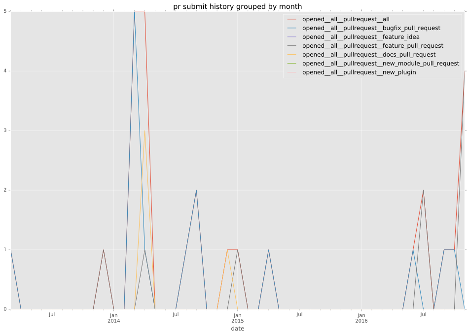
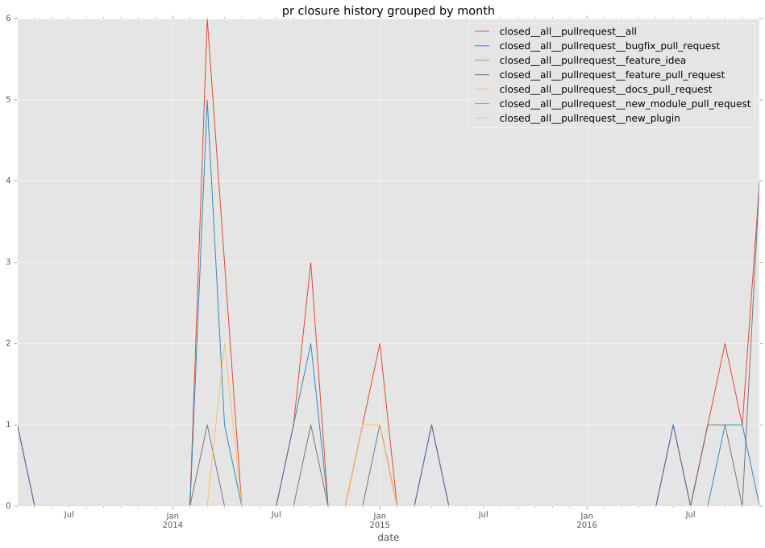

authors
maintainers
- bcoca
contributors
- bcoca : 59 commits
- gundalow : 5 commits
- towolf : 4 commits
- pilou- : 3 commits
- tmshn : 2 commits
- lamby : 2 commits
- jctanner : 1 commits
- gregdek : 1 commits
total issue counts
bugfix pull request: 12
pullrequest: 22
docs pull request: 4
feature pull request: 6
feature idea: 4
issue: 14
bug report: 10
issue history
pullrequest history


days open by issue type
feature pull request
count: 11
std: 53.0543460648
min: 0
max: 181
median: 28.0
mean: 46.8181818182
all
count: 46
std: 96.8784985343
min: 0
max: 483
median: 0.0
mean: 38.6086956522
pullrequest
count: 0
std: nan
min: nan
max: nan
median: nan
mean: nan
docs pull request
count: 7
std: 103.311364792
min: 0
max: 274
median: 1.0
mean: 39.7142857143
bugfix pull request
count: 18
std: 4.0
min: 0
max: 17
median: 0.0
mean: 1.0
feature idea
count: 2
std: 0.0
min: 0
max: 0
median: 0.0
mean: 0.0
issue
count: 0
std: nan
min: nan
max: nan
median: nan
mean: nan
bug report
count: 8
std: 187.799998098
min: 0
max: 483
median: 1.0
mean: 120.625
closures grouped by total days open